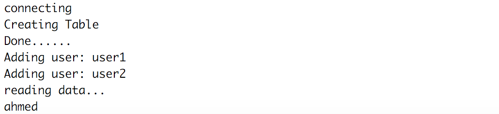

TP4 - Stockage de Données dans une Base NOSQL avec HBase¶

Télécharger PDF¶

Objectifs du TP¶
Manipulation de données avec HBase, et traitement co-localisé avec Spark.
Outils et Versions¶
- Apache HBase Version 1.4.7
- Apache Hadoop Version: 2.7.2
- Apache Spark Version: 2.2.1
- Docker Version 17.09.1
- IntelliJ IDEA Version Ultimate 2016.1 (ou tout autre IDE de votre choix)
- Java Version 1.8
- Unix-like ou Unix-based Systems (Divers Linux et MacOS)
Apache HBase¶
Présentation¶
HBase est un système de gestion de bases de données distribué, non-relationnel et orienté colonnes, développé au-dessus du système de fichier HDFS.
Il permet un accès aléatoire en écriture/lecture en temps réel à un très grand ensemble de données.
Modèle de données¶
Le modèle se base sur six concepts, qui sont :
- Table : dans HBase les données sont organisées dans des tables. Les noms des tables sont des chaînes de caractères.
- Row : dans chaque table, les données sont organisées dans des lignes. Une ligne est identifiée par une clé unique (RowKey). La Rowkey n’a pas de type, elle est traitée comme un tableau d’octets.
- Column Family : Les données au sein d’une ligne sont regroupées par column family. Chaque ligne de la table a les mêmes column families, qui peuvent être peuplées ou pas. Les column families sont définies à la création de la table dans HBase. Les noms des column families sont des chaînes de caractères.
- Column qualifier : L’accès aux données au sein d’une column family se fait via le column qualifier ou column. Ce dernier n’est pas spécifié à la création de la table mais plutôt à l’insertion de la donnée. Comme les rowkeys, le column qualifier n’est pas typé, il est traité comme un tableau d’octets.
- Cell : La combinaison du RowKey, de la Column Family ainsi que la Column qualifier identifie d’une manière unique une cellule. Les données stockées dans une cellule sont appelées les valeurs de cette cellule. Les valeurs n’ont pas de type, ils sont toujours considérés comme tableaux d’octets.
- Version : Les valeurs au sein d’une cellule sont versionnés. Les versions sont identifiés par leur timestamp (de type long). Le nombre de versions est configuré via la Column Family. Par défaut, ce nombre est égal à trois.

Les données dans HBase sont stockées sous forme de HFiles, par colonnes, dans HDFS. Chaque HFile se charge de stocker des données correspondantes à une column family particulière.

Autres caractéristiques de HBase:
- HBase n'a pas de schéma prédéfini, sauf qu'il faut définir les familles de colonnes à la création des tables, car elles représentent l'organisation physique des données
- HBase est décrite comme étant un magasin de données clef/valeur, où la clef est la combinaison (row-column family-column-timestamp) représente la clef, et la cell représente la valeur.
Architecture¶
Physiquement, HBase est composé de trois types de serveurs de type Master/Slave.
- Region Servers: permettent de fournir les données pour lectures et écritures. Pour accéder aux données, les clients communiquent avec les RegionServers directement.
- HBase HMaster : gère l'affectation des régions, les opérations de création et suppression de tables.
- Zookeeper: permet de maintenir le cluster en état.
Le DataNode de Hadoop permet de stocker les données que le Region Server gère. Toutes les données de HBase sont stockées dans des fichiers HDFS. Les RegionServers sont colocalisés avec les DataNodes.
Le NameNode permet de maintenir les métadonnées sur tous les blocs physiques qui forment les fichiers.

Les tables HBase sont divisées horizontalement, par row en plusieurs Regions. Une region contient toutes les lignes de la table comprises entre deux clefs données. Les regions sont affectées à des noeuds dans le cluster, appelés Region Servers, qui permettent de servir les données pour la lecture et l'écriture. Un region server peut servir jusqu'à 1000 régions.
Le HBase Master est responsable de coordonner les region servers en assignant les régions au démarrage, les réassignant en cas de récupération ou d'équilibrage de charge, et en faisant le monitoring des instances des region servers dans le cluster. Il permet également de fournir une interface pour la création, la suppression et la modification des tables.
HBase utilise Zookeeper comme service de coordination pour maintenir l'état du serveur dans le cluster. Zookeeper sait quels serveurs sont actifs et disponibles, et fournit une notification en cas d'échec d'un serveur.
Installation¶
HBase est installé sur le même cluster que précédemment. Si vous disposez des contenaires, vous n'avez rien à faire. Sinon, vous pourrez les installer avec Docker comme suit:
- Cloner le repo github contenant les fichiers nécessaires pour le lancement des contenaires et leur configuration:
git clone https://github.com/liliasfaxi/hadoop-cluster-docker
- Construire l'image Docker à partir du fichier Dockerfile fourni.
cd hadoop-cluster-docker ./build-image.sh - Démarrer les trois contenaires:
sudo ./start-container.sh
Le résultat de cette exécution sera le suivant:
start hadoop-master container... start hadoop-slave1 container... start hadoop-slave2 container... root@hadoop-master:~#
- Lancer Hadoop en tapant :
./start-hadoop.sh
- Lancer HBase en tapant :
start-hbase.sh
Une fois c'est fait, en tapant jps, vous devriez avoir un résultat ressemblant au suivant:
161 NameNode 1138 HRegionServer 499 ResourceManager 1028 HMaster 966 HQuorumPeer 1499 Jps 348 SecondaryNameNode
Vous remarquerez que tous les démons Hadoop (NameNode, SecondaryNameNode et ResourceManager) ainsi que les démons HBase (HRegionServer, HMaster et HQuorumPeer (Zookeeper)) sont démarrés.
Première manipulation de HBase¶
HBase Shell¶
Pour manipuler votre base de données avec son shell interactif, vous devez lancer le script suivant:
hbase shell
Vous obtiendrez une interface ressemblant à la suivante:
Nous allons créer une base de données qui contient les données suivantes:

- Commençons par créer la table, ainsi que les familles de colonnes associées:
create 'sales_ledger','customer','sales'
- Vérifier que la table est bien créée:
list
Vous devriez obtenir le résultat suivant:

- Insérer les différentes lignes:
put 'sales_ledger','101','customer:name','John White' put 'sales_ledger','101','customer:city','Los Angeles, CA' put 'sales_ledger','101','sales:product','Chairs' put 'sales_ledger','101','sales:amount','$400.00' put 'sales_ledger','102','customer:name','Jane Brown' put 'sales_ledger','102','customer:city','Atlanta, GA' put 'sales_ledger','102','sales:product','Lamps' put 'sales_ledger','102','sales:amount','$200.00' put 'sales_ledger','103','customer:name','Bill Green' put 'sales_ledger','103','customer:city','Pittsburgh, PA' put 'sales_ledger','103','sales:product','Desk' put 'sales_ledger','103','sales:amount','$500.00' put 'sales_ledger','104','customer:name','Jack Black' put 'sales_ledger','104','customer:city','St. Louis, MO' put 'sales_ledger','104','sales:product','Bed' put 'sales_ledger','104','sales:amount','$1,600.00'
- Visualiser le résultat de l'insertion, en tapant:
scan 'sales_ledger'

- Afficher les valeurs de la colonne product de la ligne 102
get 'sales_ledger','102',{COLUMN => 'sales:product'}
Vous obtiendrez:
- Vous pourrez quitter le shell en tapant:
exit
HBase API¶
HBase fournit une API en Java pour pouvoir manipuler programmatiquement les données de la base. Nous allons montrer ici un exemple très simple.
- Dans votre contenaire principal, créer un répertoire hbase-code à l'emplacement de votre choix, puis déplacez-vous dedans.
mkdir hbase-code cd hbase-code - Créer l'arborescence tn/insat/tp4 dans ce répertoire:
mkdir -p tn/insat/tp4
- Créer et ouvrir le fichier HelloHBase.java sous le répertoire tp4:
vim tn/insat/tp4/HelloHBase.java
-
Insérer le code suivant dans le fichier:
package tn.insat.tp4; import org.apache.hadoop.conf.Configuration; import org.apache.hadoop.hbase.HBaseConfiguration; import org.apache.hadoop.hbase.HColumnDescriptor; import org.apache.hadoop.hbase.HTableDescriptor; import org.apache.hadoop.hbase.TableName; import org.apache.hadoop.hbase.client.*; import org.apache.hadoop.hbase.util.Bytes; import java.io.IOException; public class HelloHBase { private Table table1; private String tableName = "user"; private String family1 = "PersonalData"; private String family2 = "ProfessionalData"; public void createHbaseTable() throws IOException { Configuration config = HBaseConfiguration.create(); Connection connection = ConnectionFactory.createConnection(config); Admin admin = connection.getAdmin(); HTableDescriptor ht = new HTableDescriptor(TableName.valueOf(tableName)); ht.addFamily(new HColumnDescriptor(family1)); ht.addFamily(new HColumnDescriptor(family2)); System.out.println("connecting"); System.out.println("Creating Table"); createOrOverwrite(admin, ht); System.out.println("Done......"); table1 = connection.getTable(TableName.valueOf(tableName)); try { System.out.println("Adding user: user1"); byte[] row1 = Bytes.toBytes("user1"); Put p = new Put(row1); p.addColumn(family1.getBytes(), "name".getBytes(), Bytes.toBytes("ahmed")); p.addColumn(family1.getBytes(), "address".getBytes(), Bytes.toBytes("tunis")); p.addColumn(family2.getBytes(), "company".getBytes(), Bytes.toBytes("biat")); p.addColumn(family2.getBytes(), "salary".getBytes(), Bytes.toBytes("10000")); table1.put(p); System.out.println("Adding user: user2"); byte[] row2 = Bytes.toBytes("user2"); Put p2 = new Put(row2); p2.addColumn(family1.getBytes(), "name".getBytes(), Bytes.toBytes("imen")); p2.addColumn(family1.getBytes(), "tel".getBytes(), Bytes.toBytes("21212121")); p2.addColumn(family2.getBytes(), "profession".getBytes(), Bytes.toBytes("educator")); p2.addColumn(family2.getBytes(), "company".getBytes(), Bytes.toBytes("insat")); table1.put(p2); System.out.println("reading data..."); Get g = new Get(row1); Result r = table1.get(g); System.out.println(Bytes.toString(r.getValue(family1.getBytes(), "name".getBytes()))); } catch (Exception e) { e.printStackTrace(); } finally { table1.close(); connection.close(); } } public static void createOrOverwrite(Admin admin, HTableDescriptor table) throws IOException { if (admin.tableExists(table.getTableName())) { admin.disableTable(table.getTableName()); admin.deleteTable(table.getTableName()); } admin.createTable(table); } public static void main(String[] args) throws IOException { HelloHBase admin = new HelloHBase(); admin.createHbaseTable(); } }
Ce code permet de réaliser les opérations suivantes:
4.1. Créer une table appelée "user" contenant deux familles de colonnes: "PersonalData" et "ProfessionalData". Si cette table existe déjà, elle sera écrasée.
4.2. Insérer deux enregistrements dans cette table.
4.3. Lire la valeur de la colonne 'PersonalData:name' de la ligne 'user1' -
Tout en restant sous le répertoire hbase-code, compiler cette classe:
javac tn/insat/tp4/HelloHBase.java
Remarque
Ce code devrait compiler sans problèmes, car la librairie HBase est déjà incluse dans le classpath par défaut, grâce à la variable d'environnement $CLASSPATH.
Exécuter ce code:
java tn.insat.tp4.HelloHBase
Le résultat devrait ressembler au suivant:

Chargement de fichiers¶
Il est possible de charger des fichiers volumineux dans la base HBase, à partir de HDFS. Nous vous fournissons pour cela le fichier purchases2.txt que vous trouverez directement sous le répertoire /root de votre contenaire.
Remarque
Ce fichier n'est autre que le fichier purchases.txt, légèrement modifié: un numéro unique est rajouté au début de chaque ligne, que nous utiliserons comme clef pour chaque enregistrement, et la séparation entre les colonnes a été remplacée par une virgule (,) au lieu d'une tabluation.
- Commencer par charger le fichier dans le répertoire input de HDFS (mais d'abord, créer ce répertoire s'il n'existe pas déjà):
hadoop fs -mkdir -p input hadoop fs -put purchases2.txt input
- Créer la base products avec une famille de colonnes cf
hbase shell create 'products','cf' exit
- Exécuter la commande suivante. ImportTsv est une utilité qui permet de charger des données au format tsv dans HBase. Elle permet de déclencher une opération MapReduce sur le fichier principal stocké dans HDFS, pour lire les données puis les insérer via des put dans la base.
hbase org.apache.hadoop.hbase.mapreduce.ImportTsv \ -Dimporttsv.separator=',' \ -Dimporttsv.columns=HBASE_ROW_KEY,cf:date,cf:time,cf:town,cf:product,cf:price,cf:payment \ products input
- Vérifier que la base a bien été créée en consultant la ville de l'enregistrement numéro 2000:
hbase shell get 'products','2000',{COLUMN => 'cf:town'}
Vous devriez obtenir le résultat suivant:

Traitement de données avec Spark¶
Installé sur le même cluster que HBase, Spark peut être utilisé pour réaliser des traitements complexes sur les données de HBase. Pour cela, les différents Executors de Spark seront co-localisés avec les region servers, et pourront réaliser des traitements parallèles directement là où les données sont stockées.

Nous allons réaliser un traitement simple pour montrer comment greffer spark sur HBase.
- Ouvrir IntelliJ IDEA, et créer un nouveau projet Maven.
- Utiliser le fichier POM suivant:
<?xml version="1.0" encoding="UTF-8"?> <project xmlns="http://maven.apache.org/POM/4.0.0" xmlns:xsi="http://www.w3.org/2001/XMLSchema-instance" xsi:schemaLocation="http://maven.apache.org/POM/4.0.0 http://maven.apache.org/xsd/maven-4.0.0.xsd"> <modelVersion>4.0.0</modelVersion> <groupId>hbase.spark</groupId> <artifactId>processing</artifactId> <version>1</version> <build> <plugins> <plugin> <groupId>org.apache.maven.plugins</groupId> <artifactId>maven-compiler-plugin</artifactId> <configuration> <source>1.8</source> <target>1.8</target> </configuration> </plugin> </plugins> </build> <dependencies> <dependency> <groupId>org.apache.hbase</groupId> <artifactId>hbase-spark</artifactId> <version>2.0.0-alpha4</version> </dependency> <dependency> <groupId>org.apache.spark</groupId> <artifactId>spark-core_2.11</artifactId> <version>2.2.1</version> </dependency> </dependencies> </project>
- Créer la classe tn.insat.tp4.HbaseSparkProcess dont le code est le suivant:
package tn.insat.tp4; import org.apache.hadoop.conf.Configuration; import org.apache.hadoop.hbase.HBaseConfiguration; import org.apache.hadoop.hbase.client.Result; import org.apache.hadoop.hbase.io.ImmutableBytesWritable; import org.apache.hadoop.hbase.mapreduce.TableInputFormat; import org.apache.spark.SparkConf; import org.apache.spark.api.java.JavaPairRDD; import org.apache.spark.api.java.JavaSparkContext; public class HbaseSparkProcess { public void createHbaseTable() { Configuration config = HBaseConfiguration.create(); SparkConf sparkConf = new SparkConf().setAppName("SparkHBaseTest").setMaster("local[4]"); JavaSparkContext jsc = new JavaSparkContext(sparkConf); config.set(TableInputFormat.INPUT_TABLE,"products"); JavaPairRDD<ImmutableBytesWritable, Result> hBaseRDD = jsc.newAPIHadoopRDD(config, TableInputFormat.class, ImmutableBytesWritable.class, Result.class); System.out.println("nombre d'enregistrements: "+hBaseRDD.count()); } public static void main(String[] args){ HbaseSparkProcess admin = new HbaseSparkProcess(); admin.createHbaseTable(); } }
Ce code permet de lire la table products que nous avions précédemment créée, puis de créer un RDD en mémoire la représentant. Un Job spark permettra de compter le nombre d'éléments dans la base. - Faire un
mvn install packagesur le projet. Un fichier processing-1.jar sera créé dans le répertoire target du projet. - Copier ce fichier dans votre contenaire:
docker cp target/processing-1.jar hadoop-master:/root/
- Copier tous les fichiers de la bibliothèque hbase dans le répertoire jars de spark:
cp -r $HBASE_HOME/lib/* $SPARK_HOME/jars
- Exécuter ce fichier grâce à spark-submit comme suit:
spark-submit --class tn.insat.tp4.HbaseSparkProcess --master yarn --deploy-mode client processing-1.jar
Le résultat qui devra s'afficher ressemblera au suivant:
Activité
Modifier ce code pour qu'il puisse faire la somme des ventes de tous les produits.